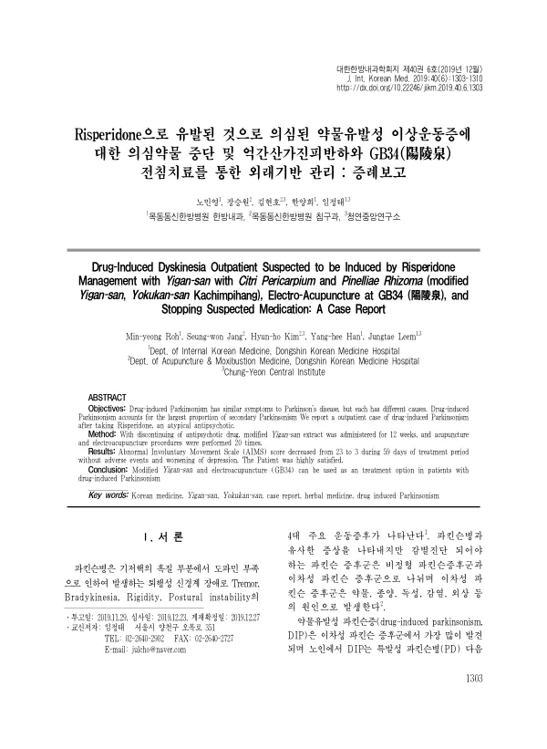

Drug-Induced Dyskinesia Outpatient Suspected to be Induced by Risperidone Management with Yigan-san with Citri Pericarpium and Pinelliae Rhizoma (modified Yigan-san, Yokukan-san Kachimpihang), Electro-Acupuncture at GB34, and Stopping Suspected Medication: A Case Report
Roh My, Jang Sw, Kim Hh, Han Yh, Leem J
The Journal of Internal Korean Medicine 40(6):1303-1310

첫 장 · 오픈액세스First page · open access
논문 소개Summary
앞선 증례가 항궤양제로 생긴 약인성 파킨슨증이었다면 이번은 비정형 항정신병약 리스페리돈으로 의심되는 경우입니다. 약인성 파킨슨증은 노인에서 특발성 파킨슨병 다음으로 흔한 파킨슨증의 원인이고, 약을 끊으면 대개 좋아지지만 최대 20%에서는 중단 뒤에도 결손이 남거나 점진적으로 진행합니다. 회복이 더디면 삶의 질이 떨어지고 운동 기능 저하로 낙상 같은 이차 사고 위험도 커집니다.
의심 약물을 끊고 억간산가진피반하 과립제를 12주 복용하게 했으며 침과 전침을 20회 시행했습니다. 전침은 앞선 증례와 같은 GB34(양릉천)에 놓았습니다. 평가는 비정상 불수의 운동 척도와 환자의 관점으로 했습니다.
약인성 파킨슨증은 도파민 수용체를 막는 약에서 주로 생깁니다. 서양의학에서는 트리헥시페니딜과 벤즈트로핀, 아만타딘, 레보도파 같은 약을 시험적으로 쓰지만 효과가 뚜렷하게 증명되지는 않았습니다.
59일의 치료 기간 동안 비정상 불수의 운동 척도가 23점에서 3점으로 떨어졌습니다. 이상반응은 없었고 우울이 악화되지도 않았습니다. 환자의 만족도는 높았습니다. 입원이 아니라 외래를 기반으로 관리한 사례라는 점이 이 축의 다른 증례들과 다릅니다.
기존 보고에서는 시메티딘과 퍼페나진, 레보설피리드로 생긴 약인성 파킨슨증의 한의 치료가 다뤄졌습니다. 리스페리돈으로 생긴 경우를 억간산가진피반하와 양릉천 전침으로 관리하면서 비정상 불수의 운동 척도와 환자 관점으로 평가한 사례는 없었습니다. 이 증례는 CARE 점검표에 따라 작성했고 경과를 한눈에 보도록 시간선 그림으로 실었습니다.
증례 하나이므로 일반화할 수 없다는 한계는 그대로입니다. 약물 중단과 한의 치료가 함께 이루어졌으므로 어느 쪽의 몫인지 가를 수 없다는 점도 앞선 증례와 같습니다.
Where the preceding case was drug-induced parkinsonism from an antiulcer drug, this one is suspected to follow risperidone, an atypical antipsychotic. Drug-induced parkinsonism is the second commonest cause of parkinsonism in older people after idiopathic Parkinson's disease. Stopping the drug usually helps, but in up to 20% of patients deficits persist or progress after withdrawal. Slow recovery costs quality of life and, through impaired motor function, raises the risk of secondary events such as falls.
The suspected medication was discontinued, modified Yigan-san granules were given for 12 weeks, and acupuncture with electroacupuncture was performed 20 times. As in the preceding case, electroacupuncture was applied at GB34. Assessment used the Abnormal Involuntary Movement Scale and the patient's own perspective.
Over 59 days of treatment the Abnormal Involuntary Movement Scale score fell from 23 to 3. There were no adverse events and no worsening of depression, and the patient was highly satisfied. Unlike the other cases in this series, this one was managed on an outpatient basis rather than in hospital.
Earlier reports had covered Korean medicine treatment of drug-induced parkinsonism from cimetidine, perphenazine and levosulpiride. None had managed a risperidone-associated case with modified Yigan-san and electroacupuncture at GB34 while assessing it by the Abnormal Involuntary Movement Scale and the patient's perspective. The report was written to the CARE checklist and presents the course as a timeline figure.
Being a single case, it does not generalise. And because drug withdrawal and Korean medicine treatment took place together, their respective contributions cannot be separated — the same limitation as in the preceding case.
인용Cite
Roh My, Jang Sw, Kim Hh, Han Yh, Leem J. Drug-Induced Dyskinesia Outpatient Suspected to be Induced by Risperidone Management with Yigan-san with Citri Pericarpium and Pinelliae Rhizoma (modified Yigan-san, Yokukan-san Kachimpihang), Electro-Acupuncture at GB34, and Stopping Suspected Medication: A Case Report. The Journal of Internal Korean Medicine. 2019;40(6):1303-1310. doi:10.22246/jikm.2019.40.6.1303